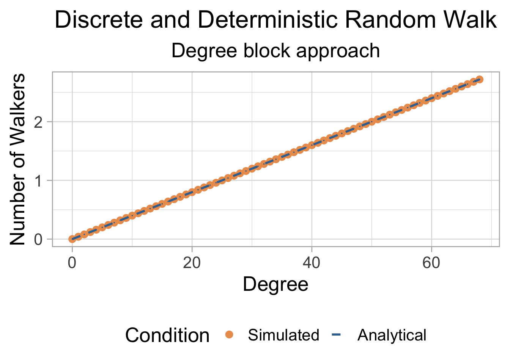

where L is the total number of edges in the networks
Function to compute W
#Input is initial vector of walkers per node, diffusion rate, adjacency matrix and max number of iterations#Output is dataframe with the evolution of number of walkers per node with timeRW_adj <-function(vec, r, A, Tmax){ k <-rowSums(A) #degree of nodes mat <-matrix(NA, nrow = Tmax, ncol =ncol(A)) #track walkers through all time mat[1,] <- vec #initialize matrix with initial Wvecfor(t in1:(Tmax-1)) {for(i in1:nrow(A)) { x <-numeric(nrow(A))for(j in1:length(x)) { x[j] <- A[i,j]*mat[t,j]/k[j] } mat[t+1,i] <- (1-r)*mat[t,i] + r*sum(x) } } df <-cbind(c(1:Tmax), as.data.frame(mat))colnames(df) <-c("Time", as.character(c(1:N)))return(df)}
Initialize variables
N <-500#Network sizep <-0.1#Probability of connections W <-2*N #Number of walkersr <-0.5#Diffusion rateTmax <-100#Time to run random walkg <-erdos.renyi.game(N, p) #generate networkA <-as.matrix(as_adjacency_matrix(g)) #extract adjacency matrixWvec <-numeric(N) #vector with number of walkers per node #assign walkers to all nodes randomlyfor(i in1:W){ j <-sample(c(1:N), 1) Wvec[j] <- Wvec[j]+1}
Simulate and visualize
W_df <-RW_adj(Wvec, r, A, Tmax) #simulate the networkkvec <-degree(g) #degrees of all nodesW_k <-data.frame("degree"= kvec,"W_sim"=unlist(W_df[Tmax,-1]),"W_anl"= W*kvec/sum(kvec))W_k_agg <-aggregate.data.frame(W_k[,c("W_sim", "W_anl")], by =list(W_k$degree), FUN ="mean")colnames(W_k_agg) <-c("degree", "Simulated", "Analytical")df_plot <- reshape2::melt(W_k_agg, id.vars =c("degree"), variable.name ="Condition", value.name ="Num_walkers")#Visualizeggplot(df_plot, aes(x=degree, y = Num_walkers, size = Condition, color = Condition, linewidth = Condition))+theme_light(base_size =20)+geom_point()+geom_line(linetype ="dashed")+scale_color_manual(values =c("#eb9c5c", "#3b719f"))+scale_size_manual(values =c(3, 0))+scale_linewidth_manual(values =c(0, 1))+labs(x ="Degree", y="Number of Walkers",title ="Discrete and Deterministic Random Walk",subtitle ="Adjacency matrix approach")+theme(plot.title =element_text(hjust =0.5),plot.subtitle =element_text(hjust =0.5),legend.position ="bottom")
Input is a degree block
We are now only given degree distribution \(P(k)\), and degree correlations \(P(k'|k)\)
The average number of walkers on a node of degree k
For uncorrelated graphs, \(P(k'|k) = k' *P(k')/<k>\)
The stationary state,
\[
W_k(\infty)=k*<W>/<k>
\]
where \(<k>\) is the average degree and \(<W> = W/N\) is the average number of walkers per node
Function to compute W
#Input is the initial vector of walkers per node of degree k, diffusion rate r, #degrees distribution, network size, max number of iterations #Output is the evolution of the number of walkers per node with degree k (W_k(t)) with timeRW_Pk <-function(vec, r, P, N, Tmax){ nk <-length(P) mat <-matrix(NA, nrow = Tmax, ncol = nk) #track walkers through all time mat[1,] <- vec #initialize matrix with initial Wvec W_av <-sum(vec)/N #average number of walkers per node k_av <-sum(c(0:(nk-1))*P)for(t in1:(Tmax-1)) {for(i in1:nk) { mat[t+1,i] <- (1-r)*mat[t,i] + r*(i-1)*W_av/k_av } } df <-cbind(c(1:Tmax), as.data.frame(mat))colnames(df) <-c("Time", as.character(c(0:(nk-1))))return(df)}
Initialize variables
N <-500#Network sizep <-0.1#Probability of connections W <-2*N #Number of walkersr <-0.5#Diffusion rateTmax <-100#Time to run random walkg <-erdos.renyi.game(N, p) #generate networkP <-degree_distribution(g) #extract adjacency matrixnk <-length(P)kvec <-c(0:(nk-1)) #all the possible degreesWvec <-numeric(nk) #vector with number of walkers per node of degree k#assign walkers to all nodes randomlyfor(i in1:W){ j <-sample(c(1:length(Wvec)), 1)if(j==0) { j <- j+1 } Wvec[j] <- Wvec[j]+1}
Simulate and visualize
W_df <-RW_Pk(Wvec, r, P, N, Tmax) #simulate the networkW_k <-data.frame("degree"= kvec,"Simulated"=unlist(W_df[Tmax,-1]),"Analytical"= kvec*W/(p*N**2))df_plot <- reshape2::melt(W_k, id.vars =c("degree"), variable.name ="Condition", value.name ="Num_walkers")#Visualizeggplot(df_plot, aes(x=degree, y = Num_walkers, size = Condition, color = Condition, linewidth = Condition))+theme_light(base_size =20)+geom_point()+geom_line(linetype ="dashed")+scale_color_manual(values =c("#eb9c5c", "#3b719f"))+scale_size_manual(values =c(3, 0))+scale_linewidth_manual(values =c(0, 1))+labs(x ="Degree", y="Number of Walkers",title ="Discrete and Deterministic Random Walk",subtitle ="Degree block approach")+theme(plot.title =element_text(hjust =0.5),plot.subtitle =element_text(hjust =0.5),legend.position ="bottom")

Stochastic
In the stochastic approach, given a network with initial distribution of random walkers, at every time step \(t\):
We pick a node \(i\) with probability \(1/N\)
For every random walker on the node, we choose whether it diffuses (with probability \(r\))
For every random walker on the node that does diffuse, we choose a neighbor \(j\)
We then move the random walker to the node \(j\)
Given the stochastic nature of this process, it is repeated several times to obtain an ensemble of possible results.
RW_stoch <-function(vec, g, r, Tmax){ N <-length(V(g)) #size of the network mat <-matrix(NA, nrow = Tmax, ncol = N) #track walkers through all time mat[1,] <- vec #initialize matrix with initial Wvecfor(t in1:Tmax) { i <-sample(c(1:N),1) #choose focal node iif(vec[i]>0) {#iterate over walkersfor(w in1:vec[i]) { move <-rbinom(1,1,r) #choose if it will moveif(move==1) { nbr <-neighbors(g, i) j <-sample(nbr, 1) #choose neighbor vec[i] <- vec[i] -1#move from i vec[j] <- vec[j] +1#move to j } } } mat[t,] <- vec #update matrix of walkers } df <-cbind(c(1:Tmax), as.data.frame(mat))colnames(df) <-c("Time", as.character(c(1:N)))return(df)}
Initialize variables
N <-100#Network sizep <-0.1#Probability of connections W <-2*N #Number of walkersr <-0.5#Diffusion rateTmax <-10000#Time to run random walkg <-erdos.renyi.game(N, p) #generate networkWvec <-numeric(N) #vector with number of walkers per node#assign walkers to all nodes randomlyfor(i in1:W){ j <-sample(c(1:length(Wvec)), 1)if(j==0) { j <- j+1 } Wvec[j] <- Wvec[j]+1}
Simulate and collate for multiple iterations
n_iter <-100W_iter <-data.frame()#conduct multiple iterationsfor(iter in1:n_iter){ df_iter <-RW_stoch(Wvec, g, r, Tmax) #conduct simulation kvec <-degree(g) #degrees of all nodes W_k <-data.frame("degree"= kvec,"W_sim"=unlist(df_iter[Tmax,-1])) W_k_agg <-aggregate.data.frame(W_k[,c("W_sim")], by =list(W_k$degree), FUN ="mean") #aggregate by degree W_k_agg <-cbind(W_k_agg, rep(iter, nrow(W_k_agg))) W_iter <-rbind(W_iter, W_k_agg)}colnames(W_iter) <-c("degree", "walkers", "iteration")#Show summary statistics over the ensemble#aggregate mean over all trialsdf_agg <-aggregate(W_iter$walkers, by =list(W_iter$degree), FUN ="mean")#aggregate standard error over all trials (standard deviation/sqrt(N))df_agg$se <-aggregate(W_iter$walkers, by =list(W_iter$degree), FUN ="sd")$x/sqrt(n_iter)df_agg$Analytical <- df_agg$Group.1*W/sum(degree(g))colnames(df_agg) <-c("degree", "Mean_walkers", "Se_walkers", "Analytical")
Visualize
ggplot()+stat_smooth(data = W_iter, aes(x = degree, y = walkers), color ="#eb9c5c", fill ="#eb9c5c55")+geom_line(data = df_agg, aes(x = degree, y = Analytical), color ="#3b719f",linetype ="dashed", linewidth =1.5)+theme_light(base_size =20)+labs(x ="Degree", y="Number of Walkers",title ="Discrete and Stochastic Random Walk",subtitle ="Adjacency matrix approach")+theme(plot.title =element_text(hjust =0.5),plot.subtitle =element_text(hjust =0.5),legend.position ="bottom")
`geom_smooth()` using method = 'gam' and formula = 'y ~ s(x, bs = "cs")'
Additional exercises
In these exercises, we will study how the time taken for a random walk process to reach equilibrium on a network depends on structural properties of the network: namely, homophily and preferential attachment
First, we will write the function for deriving random walk time.
#Given a dataframe with columns corresponding to number of walkers on different nodes and rows corresponding to different time point, output equilibrium timeT_eq <-function(Wdf, thresh){ ddf <-as.data.frame(matrix(nrow =nrow(Wdf)-1,ncol =ncol(Wdf))) Teq <-NAfor(t in1:nrow(ddf)) { ddf[t,] <- Wdf[t+1,] - Wdf[t,] if(all(abs(ddf[t,]) <= thresh)) { Teq <- tbreak } }return(Teq)}
Random walk time as a function of preferential attachment
We will use BA model with preferential attachment
N <-100#Network sizem <-2#number of edges per incoming node for BA modelW <-2*N #Number of walkersr <-0.5#Diffusion rateTmax <-300#Time to run random walkp_vec <-seq(0.1,1, length.out =20) #preferential attachment exponent (alpha)g_vec <-1+1/p_vec #power law exponentthresh <-10**(-5) #threshold for the T_eq functiong0 <-make_full_graph(4)n_iter <-20#run multiple iterationstdf_iter <-data.frame()for(iter in1:n_iter){ time_df <-data.frame("power"= p_vec,"time"=NA,"iteration"=rep(iter, length(p_vec)))for(p in1:length(p_vec)) { g <-sample_pa(N, power = p_vec[p], m = m, directed = F, start.graph = g0) #generate graph A <-as.matrix(as_adjacency_matrix(g)) #adjacency matrix Wvec <-numeric(N) #vector with number of walkers per node #assign walkers to all nodes randomlyfor(i in1:W) { j <-sample(c(1:N), 1) Wvec[j] <- Wvec[j]+1 } W_df <-RW_adj(Wvec, r, A, Tmax) #simulate the network time_df$time[p] <-T_eq(W_df[,-1], thresh) } tdf_iter <-rbind(tdf_iter, time_df)}tdf_agg <-aggregate(tdf_iter$time, by =list(tdf_iter$power), FUN ="mean")colnames(tdf_agg) <-c("alpha", "time")tdf_agg$gamma <- g_vec
Visualize
ggplot(tdf_agg, aes(x=gamma, y = time))+geom_line(linetype ="dashed", linewidth =1.2, color ="#eb9c5c66")+geom_point(size =3, color ="#eb9c5c")+theme_light(base_size =20)+labs(x ="Power law exponent (gamma)", y="Time taken to finish random walk",title ="Discrete and Deterministic Random Walk",subtitle ="Adjacency matrix approach")+theme(plot.title =element_text(hjust =0.5),plot.subtitle =element_text(hjust =0.5),legend.position ="bottom")
Random walk time as a function of network homophily
We will use the BA model with homophily
N <-100#Network sizem <-2#number of edges per incoming node for BA modelW <-2*N #Number of walkersr <-0.5#Diffusion rateTmax <-300#Time to run random walkp_vec <-seq(0.05,0.95, length.out =20) #homophily coefficientthresh <-10**(-5) #threshold for the T_eq functionn_iter <-20#run multiple iterationstdf_iter <-data.frame()for(iter in1:n_iter){ time_df <-data.frame("homophily"= p_vec,"time"=NA,"iteration"=rep(iter, length(p_vec)))for(p in1:length(p_vec)) {#alpha =1 by default g <-sample_pa_homophilic(N, m, 0.2, h_ab = p_vec[p]) #generate graph A <-as.matrix(as_adjacency_matrix(g)) #adjacency matrix Wvec <-numeric(N) #vector with number of walkers per node #assign walkers to all nodes randomlyfor(i in1:W) { j <-sample(c(1:N), 1) Wvec[j] <- Wvec[j]+1 } W_df <-RW_adj(Wvec, r, A, Tmax) #simulate the network time_df$time[p] <-T_eq(W_df[,-1], thresh) } tdf_iter <-rbind(tdf_iter, time_df)}tdf_agg <-aggregate(tdf_iter$time, by =list(tdf_iter$homophily), FUN ="mean")colnames(tdf_agg) <-c("homophily", "time")
Visualize
ggplot(tdf_agg, aes(x=homophily, y = time))+geom_line(linetype ="dashed", linewidth =1.2, color ="#eb9c5c66")+geom_point(size =3, color ="#eb9c5c")+theme_light(base_size =20)+labs(x ="Homophily", y="Time taken to finish random walk",title ="Discrete and Deterministic Random Walk",subtitle ="Adjacency matrix approach")+theme(plot.title =element_text(hjust =0.5),plot.subtitle =element_text(hjust =0.5),legend.position ="bottom")